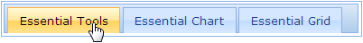

The tab control provides support for collapsing all tab content at the same time.
Property
|
Name |
Description |
Type of property |
Value it accepts |
Dependency |
|
Collapsible |
When set, all the tab content can be collapsed at once. |
bool |
True/False |
NA |
Using Builder
The following steps explain how to, through the builder, allow all tab content to be collapsed at once.
1. In View, create the contents of the tab with ul and li (for headers) and div tags (for content) and invoke the tab helper with the control ID as the first argument, followed by the Collapsible method with an argument set to True.
|
View[ASPX]
<div id="tabContents" style="visibility: hidden"> <ul> <li><a href="#tools">Essential Tools</a></li> <li><a href="#chart">Essential Chart</a></li> <li><a href="#grid">Essential Grid</a></li> </ul> <div id="tools"> Essential Tools is a collection of user-interface components used to create interactive ASP.NET MVC applications. </div> <div id="chart"> Essential Chart is a business-oriented charting component. Essential Chart features an advanced styles architecture that makes complex multi-level formatting very easy. </div> <div id="grid"> Essential MVC Grid offers a full-featured grid control with extensive support for grouping and displaying hierarchical data. </div> </div> <%=Html.Syncfusion().Tab("myTab") .TargetControlId("tabContents") .Collapsible(true)%>
|
|
View[cshtml]
<div id="tabContents" style="visibility: hidden"> <ul> <li><a href="#tools">Essential Tools</a></li> <li><a href="#chart">Essential Chart</a></li> <li><a href="#grid">Essential Grid</a></li> </ul> <div id="tools"> Essential Tools is a collection of user-interface components used to create interactive ASP.NET MVC applications. </div> <div id="chart"> Essential Chart is a business-oriented charting component. Essential Chart features an advanced styles architecture that makes complex multi-level formatting very easy. </div> <div id="grid"> Essential MVC Grid offers a full-featured grid control with extensive support for grouping and displaying hierarchical data. </div> </div> @{ Html.Syncfusion().Tab("myTab") .TargetControlId("tabContents") .Collapsible(true).Render(); }
|
2. Build and run the application.
Using Properties Model
The following steps explain how to enable, through the properties model, tab content to be collapsed at one time.
1. In the controller, create an instance of TabModel.
2. Set the Collapsible property and pass the instance through the view-specific data to the view.
|
[Controller] public ActionResult Index() { //Create an instance of TabModel. TabModel myModel = new TabModel(); myModel.TargetControlId = "tabContents"; myModel.Collapsible = true;
//Pass the instance through the view data to the view. ViewData["myTab"] = myModel; return View(); }
|
3. In View, create the contents of the tabs with ul and li (for headers) and div tags (for content), and invoke the tab helper with the view data key as the control ID.
|
View[ASPX] <div id="tabContents" style="visibility: hidden"> <ul> <li><a href="#tools">Essential Tools</a></li> <li><a href="#chart">Essential Chart</a></li> <li><a href="#grid">Essential Grid</a></li> </ul> <div id="tools"> Essential Tools is a collection of user-interface components used to create interactive ASP.NET MVC applications. </div> <div id="chart"> Essential Chart is a business-oriented charting component. Essential Chart features an advanced styles architecture that makes complex multi-level formatting very easy. </div> <div id="grid"> Essential MVC Grid offers a full-featured grid control with extensive support for grouping and displaying hierarchical data. </div> </div> <%=Html.Syncfusion().Tab("myTab")%>
|
|
View[cshtml] <div id="tabContents" style="visibility: hidden"> <ul> <li><a href="#tools">Essential Tools</a></li> <li><a href="#chart">Essential Chart</a></li> <li><a href="#grid">Essential Grid</a></li> </ul> <div id="tools"> Essential Tools is a collection of user-interface components used to create interactive ASP.NET MVC applications. </div> <div id="chart"> Essential Chart is a business-oriented charting component. Essential Chart features an advanced styles architecture that makes complex multi-level formatting very easy. </div> <div id="grid"> Essential MVC Grid offers a full-featured grid control with extensive support for grouping and displaying hierarchical data. </div> </div> @{ Html.Syncfusion().Tab("myTab").Render();}
|
4. Build and run the application.
The following figure shows the output when all tabs are collapsed.

Figure 267:Tabs with Collapsed Content